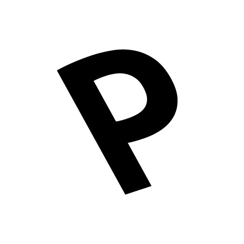

Hi! Please wait a few seconds,
we are loading five fonts from the new Prototypo Elzevir font template:
- Prototypo Elzevir Light … loading
- Prototypo Elzevir Regular … loading
- Prototypo Elzevir Bold … loading
- Prototypo Elzevir Caption … loading
- Prototypo Elzevir Sans … loading